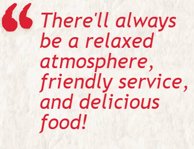
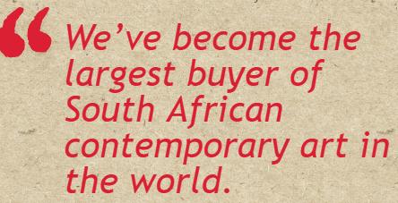

WELCOME TO OUR HOME
Minha casa é sua casa, or in English, our home is your home, and you, your family and friends will always enjoy a warm welcome at Nando’s.
What you won’t find when visiting Nando’s is a ‘cookie-cutter’ approach. That’s because each one of our restaurants has its own special design. Doing things this way has meant a little more work, but we reckon it’s really worth the effort and the result is pretty unique.

TAKE A TOUR
We’re pretty proud of our restaurants – and the fact that they don’t all look the same. Even though they’re all different, you’ll always find a warm welcome, beautiful contemporary South African artworks and rich colours and textures that remind us of our sunny Afro-Portuguese heritage. You’ll also find a few quirky surprises along the way - we hope you enjoy finding them!
